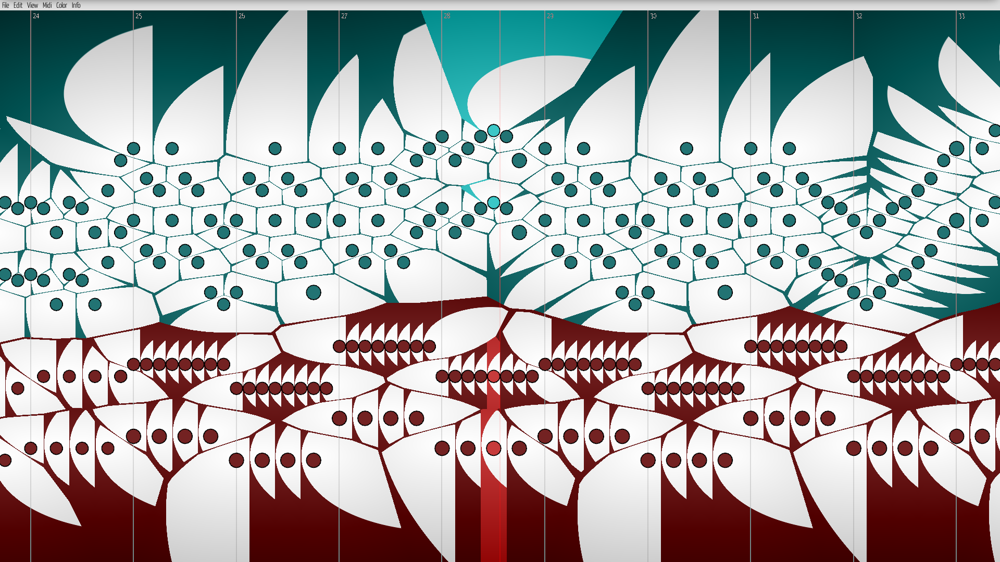
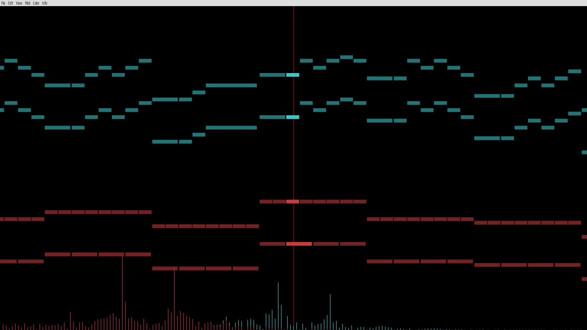
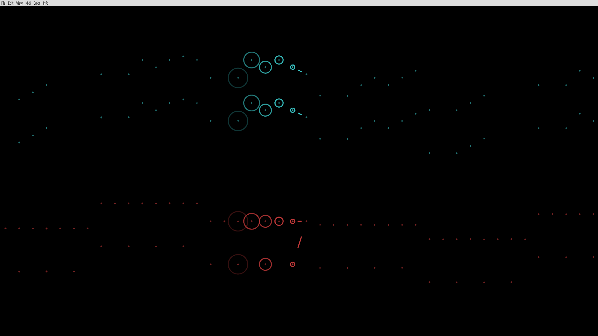

overview
nodumiis a real-time music visualization programthe full source code is available (), along with build instructions, and (sometimes) precompiled binaries
currently, only linuxand windowsare supported
a usage guide is now available
ನೋಡು (look/see) + [mi]di nodumi
features
this list is non-exhaustive, and more features will be added as development continues- visualization from prerecorded or real-time MIDI input
- six unique display modes available (),
- full control of display parameters (zoom, color, etc.)
- algorithmic color palette generation from a background image
- real-time sheet music generation (in development)
- particle generation for currently active notes
- automatic hand detection and track splitting from real-time MIDI input data
- packaging of selected options in a single master parameter file
display modes
this page is under construction
voronoi
 bezier curves connect adjacent notes
ball
bezier curves connect adjacent notes
ball
 temporal separation through variably-sized circles
bar
temporal separation through variably-sized circles
bar

voronoi cells separate notes
fft

FFT approximation of a piano sound envelope function
pulse

pulse highlights active notes
line
bezier curves connect adjacent notes
temporal separation through variably-sized circles
the simplest display mode